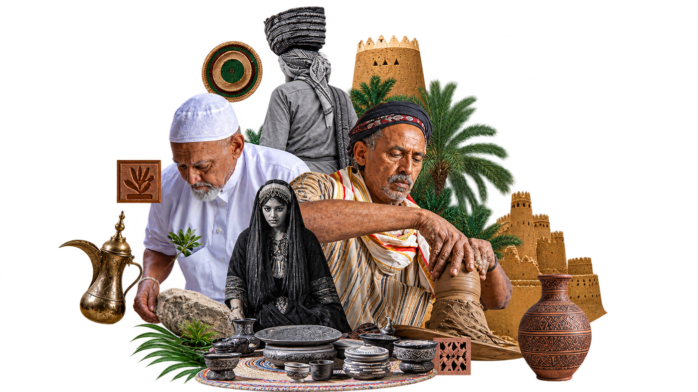

كيف بدأت الفكرة؟
في كل منطقة من مناطق مملكتنا الحبيبة، توجد قصة تُحكى بأيدي الحرفيين والحرفيات؛ من خيوط السدو في نجد، إلى نقوش القط العسيري في الجنوب، وفخار الأحساء في الشرق. انطلقت منصة "مسير" لتكون الجسر الذي يربط أصالة الماضي بحاضرنا الرقمي، حيث نجمع تفاصيل 9 حرف تقليدية رئيسية من مختلف مناطق المملكة في مساحة واحدة تفاعلية تتيح للجميع استكشاف التاريخ والمواد وأسرار الصنعة.
عن قطاع الحِرف اليدوية
قطاع الحرف اليدوية يمثل أحد روافد الاقتصاد الإبداعي في المملكة، يجمع بين الأصالة والابتكار، ويتيح فرصًا واسعة لتمكين الحرفيين وتعزيز الهوية الثقافية السعودية.
+11,000
حرفي وحرفية مرخصين من هيئة التراث